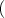
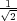

A coordinate is a position in a picture. TikZ uses a special syntax for specifying coordinates. Coordinates are always put in round brackets. The general syntax is ([<options>]<coordinate specification>).
It is possible to give options that apply only to a single coordinate, although this makes sense for transformation options only. To give transformation options for a single coordinate, give these options at the beginning in brackets:
|
The simplest way to specify coordinates is as a comma-separated pair of TEX dimensions as in (1cm,2pt) or (2cm,\textheight). As can be seen, different units can be mixed. The coordinate specified in this way means “1cm to the right and 2pt up from the origin of the picture.” You can also write things like (1cm+2pt,2pt) since the calc package is used.
You can also specify coordinates in polar coordinates. In this case, you specify an angle and a distance, separated by a colon as in (30:1cm). The angle must always be given in degrees and should be between -360 and 720.
|
Instead of an angle given as a number you can also use certain words. For example, up is the same as 90, so that you can write \tikz \draw (0,0) -- (2ex,0pt) -- +(up:1ex); and get . Apart from up you can use down, left, right, north, south, west, east, north east, north west, south east, south west, all of which have their natural meaning.
You can specify coordinates in PGF’s xy-coordinate system. In this case, you provide two unit-free numbers, separated by a comma as in (2,-3). This means “add twice the current PGF x-vector and subtract three times the y-vector.” By default, the x-vector points 1cm to the right, the y-vector points 1cm upwards, but this can be changed arbitrarily using the x and y graphic options.
Similarly, you can specify coordinates in the xyz-coordinate system. The only difference to the xy-coordinates is that you specify three numbers separated by commas as in (1,2,3). This is interpreted as “once the x-vector plus twice the y-vector plus three times the z-vector.” The default z-vector points to -cm,-cm. Consider the following example:
|
In PGF and in TikZ it is quite easy to define a node that you wish to reference at a later point. Once you have defined a node, there are different ways of referencing points of the node.
An anchor coordinate is a point in a node that you have previously defined using the node operation. The syntax is (<node name>.<anchor>), where <node name> is the name that was previously used to name the node using the name=<node name> option or the special node name syntax. Here is an example:
|
Section 11.8 explain which anchors are available for the basic shapes.
In addition to the named anchors, it is possible to use the syntax <node name>.<angle> to name a point of the node’s border. This point is the coordinate where a ray shot from the center in the given angle hits the border. Here is an example:
|
It is also possible to just “leave out” the anchor and have TikZ calculate an appropriate border position for you. Here is an example:
|
TikZ will be reasonably clever at determining the border points that you “mean,” but, naturally, this may fail in some situations. If TikZ fails to determine an appropriate border point, the center will be used instead.
Automatic computation of anchors works only with the line-to operations --, the vertical/horizontal versions |- and -|, and with the curve-to operation ... For other path commands, such as parabola or plot, the center will be used. If this is not desired, you should give a named anchor or an angle anchor.
Note that if you use an automatic coordinate for both the start and the end of a line-to, as in --(b)--, then two border coordinates are computed with a move-to between them. This is usually exactly what you want.
If you use relative coordinates together with automatic anchor coordinates, the relative coordinates are always computed relative to the node’s center, not relative to the border point. Here is an example:
|
Similarly, in the following examples both control points are (1,1):
|
Often you wish to specify a point that is on the intersection of two lines. The first way to specify such an intersection is the following: You can use the special syntax (intersection of <p1>--<p2> and <q1>--<q2>). This will yield the intersection point of the line going through p1 and p2 and the line through q1 and q2. If the lines do not meet or if they are identical and arithmetical overflow error will result.
|
A frequent special case of intersections is the intersection of a vertical line going through a point p and a horizontal line going through some other point q. For this situation there is a special, shorter, syntax: You can say either (<p> |- <q>) or (<q> -| <p>).
For example, (2,1 |- 3,4) and (3,4 -| 2,1) both yield the same as (2,4) (provided the xy-coordinate system has not been modified).
The most useful application of the syntax is to draw a line up to some point on a vertical or horizontal line. Here is an example:
|
You can prefix coordinates by ++ to make them “relative.” A coordinate such as ++(1cm,0pt) means “1cm to the right of the previous position.” Relative coordinates are often useful in “local” contexts:
|
Instead of ++ you can also use a single +. This also specifies a relative coordinate, but it does not “update” the current point for subsequent usages of relative coordinates. Thus, you can use this notation to specify numerous points, all relative to the same “initial” point:
|
There is one special situation, where relative coordinates are interpreted differently. If you use a relative coordinate as a control point of a Bézier curve, the following rule applies: First, a relative first control point is taken relative to the beginning of the curve. Second, a relative second control point is taken relative to the end of the curve. Third, a relative end point of a curve is taken relative to the start of the curve.
This special behavior makes it easy to specify that a curve should “leave or arrives from a certain direction” at the start or end. In the following example, the curve “leaves” at 30o and “arrives” at 60o:
|